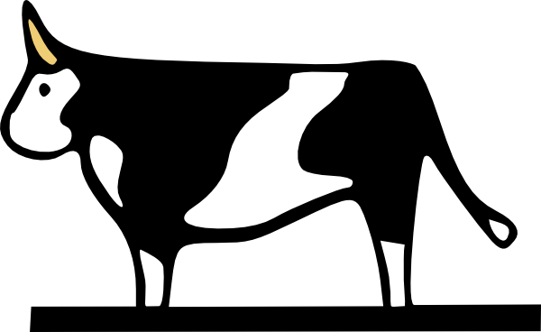

Redy Beef
Os cortes gourmets mais premiados diretamente na sua casa
Viva essa experiência incomparável
Tudo na Redy Beef é pensado para proporcionar uma experiência incomparável aos consumidores, desde o atendimento.
Nossa localização
Estamos localizados no coração da cidade.
Cortes Disponíveis
- 1. T-Bone: carnes especiais que combinam dois cortes
- 2. Short Rib: corte de costela especial
- 3. Prime Rib: costela de primeira para grelha
- 4. Picanha: popular carne nobre de churrascos
- 5. Bife Ancho: carne especial e típica argentina
- 6. Bife de Chorizo: carne perfeitamente suculenta
- 7. Porterhouse: peça especial que une três cortes consagrados